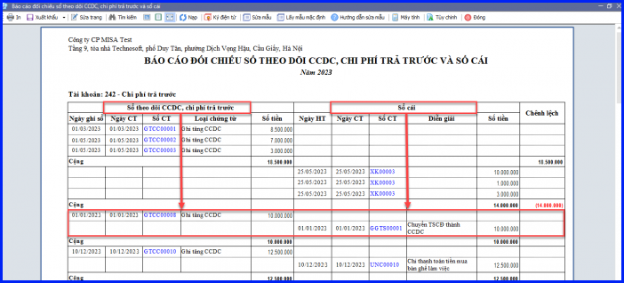
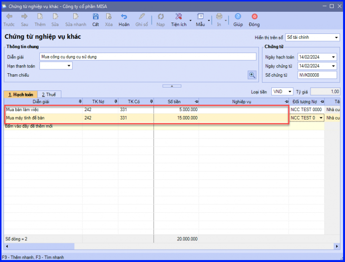

Hướng dẫn các phương án xử lý khi ghi tăng CCDC không chọn được chứng từ nguồn gốc hình thành vào tab Nguồn gốc hình thành
Liệt kê các trường hợp không chọn được chứng từ nguồn gốc hình thành CCDC vào tab "Nguồn gốc hình thành" và cách xử lý từng trường hợp.
Các phương án xử lý:
A - Chứng từ có giá trị bằng 0.
- Nếu Xuất kho CCDC cần tính giá xuất kho để phần mềm cập nhật giá trị cho phiếu xuất kho CCDC. Sau đó chọn lại nguồn gốc hình thành cho CCDC.
- Nếu mua CCDC dùng ngay (hạch toán trên chứng từ mua hàng, phiếu chi, ủy nhiệm chi, chứng từ nghiệp vụ khác): cần kiểm tra xem các chứng từ này đã có số tiền chưa để điền bổ sung.
B - Chứng từ không hạch toán đúng vào TK 242 hoặc TK chi phí CCDC như 154x/642x (TT133); 6413/6423/6233/6273 (TT200)
- Kiểm tra lại để hạch toán vào đúng tài khoản chi phí trả trước hoặc chi phí CCDC.
C - Chứng từ đã được chọn thành nguồn gốc hình thành cho CCDC khác.
Để kiểm tra xem chứng từ đã được chọn làm nguồn gốc hình thành của CCDC nào, thực hiện như sau:
- Vào mục "Báo cáo" => "Báo cáo đối chiếu" => "Báo cáo đối chiếu sổ theo dõi CCDC, chi phí trả trước và sổ cái".
- Không tích chọn "Chỉ hiển thị các dòng phát sinh chênh lệch".
- Thiết lập khoảng thời gian và tài khoản cần kiểm tra.
- Kiểm tra tại mục "Sổ cái", chứng từ đã được chọn làm nguồn gốc hình thành của CCDC sẽ được ghép tương ứng với chứng từ ghi tăng CCDC bên mục "Sổ theo dõi CCDC, chi phí trả trước"

D - Mua nhiều CCDC trên cùng 1 chứng từ.
Để chọn được nguồn gốc hình thành cho từng CCDC, trên chứng từ mua CCDC, cần tách ra thành nhiều dòng với số tiền tương ứng với từng CCDC.

KẾ TOÁN DIỆU TÂM chúc các bạn làm tốt!
=============================
Nếu bạn muốn thành thạo các kỹ năng làm kế toán trên phần mềm Misa
Thì bạn có thể tham khảo "Khóa Học Thực Hành Kế Toán Trên Phần Mềm Misa" tại Công ty đào tạo Kế Toán Diệu Tâm
Trong khóa học này, bạn sẽ được dạy cách lên sổ sách, lập báo cáo tài chính trên phần mềm Misa
Chi tiết về chương trình đào tạo bạn xem tại đây nhé: Khóa học thực hành kế toán trên Misa
=============================
=============================
Nếu bạn muốn thành thạo các kỹ năng làm kế toán trên phần mềm Misa
Thì bạn có thể tham khảo "Khóa Học Thực Hành Kế Toán Trên Phần Mềm Misa" tại Công ty đào tạo Kế Toán Diệu Tâm
Trong khóa học này, bạn sẽ được dạy cách lên sổ sách, lập báo cáo tài chính trên phần mềm Misa
Chi tiết về chương trình đào tạo bạn xem tại đây nhé: Khóa học thực hành kế toán trên Misa
=============================